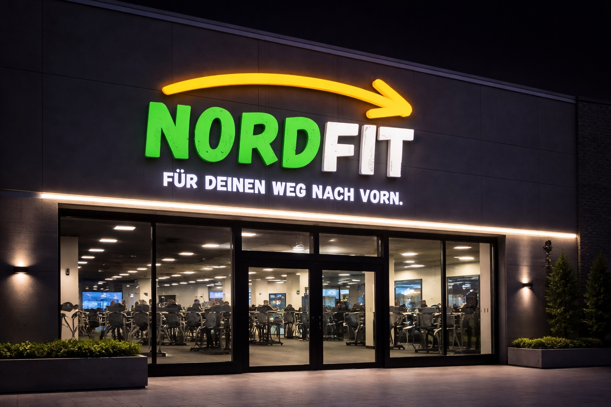

Standorte
Dein Studio. Klar erreichbar.
Wähle einen Standort aus und sieh dir Studioinfos, Status und Karte an. Weitere NordFit Studios im Norden sind bereits in Planung.

Studio GrevesmühlenIn Planung
Grevesmühlen, Mecklenburg-Vorpommern
Studio Grevesmühlen
Ruhig gelegen. Klar aufgebaut. Digital zugänglich.
Das NordFit Studio Grevesmühlen ist als moderner 24/7-Standort geplant: klare Trainingsbereiche, digitaler Zugang über die App und ein ruhiges Studioerlebnis ohne unnötige Ablenkung.
Status
In Planung
Zugang
24/7 per App geplant
Bereiche
Krafttraining, Cardio, Functional
Buchung
über die NordFit App geplant
Karte
Studio Grevesmühlen
In Planung
Weitere Studios. Schritt für Schritt.
NordFit startet bewusst klar und wächst geplant weiter. Erst sauber aufbauen, dann ruhig erweitern.